Expand all Collapse all Surrak is your combat trick and protection for creature spells, not the engine you must cast on curve. Develop mana, cards and a threatening board, then flash Surrak in when trample or an uncounterable creature spell changes the outcome. Surrak does not give itself trample, and it does not give your other creatures flash. Establish mana before the monsters +++Birds of Paradise + Llanowar Elves + Elvish Mystic + Delighted Halflingturn-one acceleration makes the four- and five-mana setup creatures arrive sooner. Halfling's colored mana is restricted to legendary spells; it cannot pay colored costs for your ordinary creatures or combat tricks. ++Nature's Lore + Three Visits + Farseekfind typed dual lands to establish all three colors. Lore and Visits can find Forest duals without inherently tapping them; Farseek puts its land in tapped. A land's own enters-tapped text still applies. +Sol Ring + Arcane Signetcomplement the creature ramp so one creature sweeper does not erase every extra mana source. Sol Ring pays generic costs but cannot solve green-heavy hands by itself. +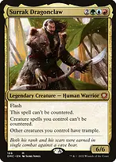Bloom Tender + Surrak DragonclawSurrak supplies green, blue and red among your permanents, allowing Tender to produce all three colors. Without Surrak, count the colors you actually control. Fanatic of Rhonasproducing four green becomes easy once a large creature arrives. Its eternalized 4/4 token enables its own ferocious ability, but still needs haste or a later turn before tapping. Selvala, Heart of the Wildspower becomes mana in any colors, especially after a Xenagos or pump-spell boost. Its entrance draw checks every creature on the battlefield and can help opponents whose new creature is uniquely largest. 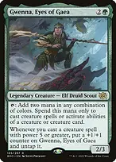Gwenna, Eyes of Gaeasupplies two restricted mana and untaps when you CAST a creature spell with power at least five. Putting one onto the battlefield with a tutor does not untap it. The mana can pay for creature spells or abilities of creature sources, not arbitrary instants. 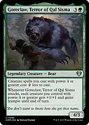Goreclaw, Terror of Qal Sismadiscounts creature spells with power four or greater by two generic mana. Its attack trigger also buffs the qualifying bodies and supplies trample when Surrak is absent. The Great Hengelarge creatures reduce its cost dramatically; the mana, life, counters and nontoken-creature draws turn follow-up threats into a sustainable engine. Tokens do not trigger its draw. Gaea's Cradleturns your mana creatures and later token army into a large finishing spell. It produces nothing without creatures, so do not count it as a dependable opening green source. Play at the moment that matters Surrak Dragonclawflash in after blockers are declared but before damage to give OTHER attackers trample. You may also resolve it in response to a counterspell targeting another creature spell you control. Its protection applies while it remains on the battlefield; bouncing or exiling a spell still works against uncounterability. Radagast of Rhosgobelthe first creature spell you cast each turn gets flash permission and a two-generic discount. This is one creature per turn, not every creature; casting a different creature earlier in the turn uses up that first-spell opportunity. 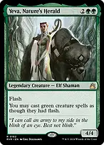Yeva, Nature's Heraldgrants flash to your green creature spells, including multicolored green creatures. It does not grant flash to a purely red Dragon or blue Leviathan. +Seedborn Muse + Radagast of Rhosgobeluntap your permanents on each opponent's untap step and turn that mana into a discounted creature on each turn. You still need cards in hand, and Muse does not grant flash by itself. 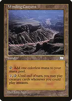Winding Canyonsa land-based way to cast any creature at instant speed for the rest of the turn. Its activation uses two mana plus tapping the land, so budget that overhead before relying on it. +Samut, Hazoret's Champion + Temur Ascendancyredundant haste keeps a topdecked threat from losing a full turn and lets fresh mana creatures tap immediately. Ascendancy also draws from creatures entering with power four or more, including suitably large tokens. Build a hand that can support repeated threats +Sylvan Library + Guardian ProjectLibrary improves early draw quality; Project rewards nontoken creatures with distinct names. Watch the life spent on Library and Project's name checks when using a creature copy. 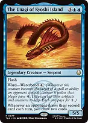The Unagi of Kyoshi Islanda flash 5/5 that draws two whenever an opponent draws their second card in a turn. Hold it for an appropriate window rather than assuming every opponent will trigger it each round. 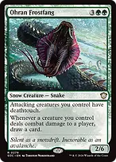+Ohran Frostfang + Surrak Dragonclawattacking creatures gain deathtouch and, except for Surrak himself, trample. One damage is normally lethal assignment to each blocker, leaving the rest for the defending player. Each creature connecting also draws a card. 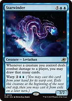Starwinderevery creature's combat damage to a player can draw that many cards. Warp is a four-mana way to fund one major attack, but the creature is exiled at the next end step. The draws are optional: stop before decking yourself. Return of the Wildspeakerhold up either a large instant-speed refill or a +3/+3 boost to non-Humans. Surrak is Human, so it neither sets the draw amount nor receives the team pump. 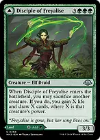Disciple of Freyalise // Garden of Freyalisesacrifice a spent or threatened creature for life and cards based on its current power. With flash permission, it can convert a creature facing removal into resources. Play the land face early when needed; a land on the battlefield cannot simply be turned into the creature later. Eternal Witnessrecover a protection spell, combat trick, tutor or key permanent. This is recovery after a real exchange, not a reason to discard your whole hand into Survival. Make big attacks lethal 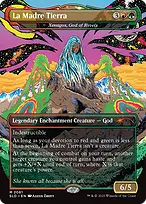Xenagos, God of Revelsdoubles another creature's current power and grants haste at the beginning of each of your combats. It works as an enchantment below seven red/green devotion. Put the intended attacker onto the battlefield before combat begins. 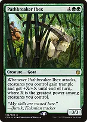+Pathbreaker Ibex + Xenagos, God of RevelsXenagos makes Ibex attack immediately and boosts the power used by its attack trigger. Every creature you control receives the resulting bonus and trample, including mana creatures that can safely join the attack. +Karlach, Fury of Avernus + Pathbreaker IbexKarlach untaps the creatures attacking in the first combat and grants them first strike, then supplies one extra combat. Ibex triggers again on its next attack, using the already boosted board. Karlach does not need to attack to trigger, but must be present when you declare the first attack. +Karlach, Fury of Avernus + Xenagos, God of Revelsthe second beginning of combat gives another Xenagos boost, potentially to the same creature. This is a finite second combat, not an infinite loop. Creatures added after Karlach's untap need vigilance or another way to be untapped to attack twice. Craterhoof Behemothconverts a board containing mana creatures and tokens into a finishing attack. Count actual creatures and blockers before fetching it; on an empty board it is an expensive hasty creature, not a guaranteed win. Finale of Devastationearly, find an engine or recover a creature from your graveyard. At X=10 or more, the team gets +X/+X and haste; finding Craterhoof then adds its separate entrance boost. Reaching X=10 costs twelve mana, not ten. 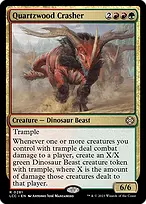Quartzwood Crashertrampling combat damage to each player produces a Dinosaur token sized to that player's damage event. Double strike can produce separate tokens in both damage steps; damage to blockers does not count. 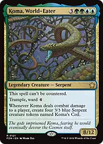Koma, World-Eatera large ward-protected attacker that creates four 3/3 Serpents each time it damages a player. Double strike can make eight. The Serpents widen subsequent attacks and increase Cradle and Craterhoof output. 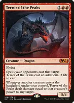Terror of the Peaksmakes every other creature entrance a removal spell or direct damage. A large Quartzwood token supplies a particularly large shot. Damage uses the entering creature's power, while mana creatures still provide smaller useful triggers. 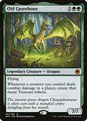Old Gnawboneconverts actual combat damage to players into Treasure, funding the next wave or a large Finale. Damage absorbed by blockers makes no Treasure, making trample and double strike meaningful mana engines. Etali, Primal Conqueror // Etali, Primal Sicknessa high-impact entrance that can cast one revealed nonland spell from each player's library. Transforming later provides a poison-based finishing attack, but the activation is expensive and sorcery-speed. A good developed draw threatens lethal combat around turns six to eight. The deck aims to keep playing through disruption rather than assembling a two-card infinite. Its creature engines and other trample sources continue functioning when commander tax makes Surrak inconvenient. Hold real combat tricks 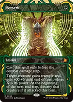Berserkcast after blocks, before the combat damage step, to double current power and grant trample for one green. The attacked creature is destroyed at the next end step, so use it for a decisive exchange or pair it with indestructibility. 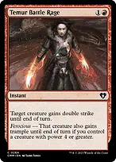Temur Battle Ragedouble strike multiplies player damage and repeats combat-damage triggers. Ferocious also grants trample when you control a creature with power four or greater, which often makes this a finisher even without Surrak. Embercleaveflash it in after declaring attackers to benefit from its cost reduction, then attach it with the entrance trigger. Its +1/+1, double strike and trample persist for later turns. Opponents can still respond to the equip-on-entry trigger. 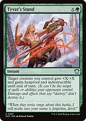+Tyvar's Stand + BerserkStand supplies protection and scalable power; Berserk doubles the power after that boost resolves. Indestructible also prevents Berserk's end-step destruction that turn. Stand at X=0 is still a useful one-mana protection spell. Legolas's Quick Reflexesuse before your creature becomes tapped to turn attacking or activating a tap ability into a damage trigger. It untaps the creature on resolution and grants hexproof; it does not grant indestructible. Split second protects the spell while it is on the stack, not every later trigger. +Legolas's Quick Reflexes + Selvala, Heart of the Wildsuntap Selvala, then tap it for more mana and a damage trigger. That trigger deals SELVALA'S own power, not the amount of mana produced. On a large attacker, the same effect can remove a blocker after attacks are declared. +Heroic Intervention + Deflecting Swatprotect the attacking board or redirect a targeted answer. Intervention does not stop sacrifice, exile sweepers or sufficiently large toughness reduction. Swat requires Surrak under your control for its free alternative cost. Creatures that solve different problems Kogla, the Titan Ape fights a creature on entrance and destroys an artifact or enchantment controlled by the player it attacks. The fight can kill Kogla; protection or a shield can matter against a larger creature. 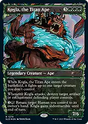+Kogla, the Titan Ape + Surrak Dragonclawreturn the Human commander to hand for two mana to save it and give Kogla indestructible. Recasting from hand avoids commander tax, but Surrak's battlefield abilities stop while it is absent. +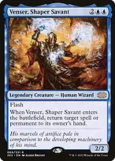Kogla, the Titan Ape + Venser, Shaper Savantreturning the Human Venser permits another flash bounce later, at a real mana cost. You can also reuse Eternal Witness this way. These are repeatable value lines, not free loops. Titan of Industryselect the two modes matching the board: removal, five life, a Rhino or a shield. A shield protects against one applicable damage or destruction event; it does not stop exile, bounce or sacrifice. 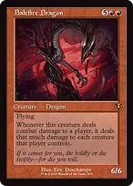Balefire Dragonconnecting with a player deals that much damage to each creature they control. Trample helps get a small amount through a flying blocker; boosting power or double strike can wipe the defended board during combat. 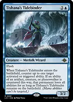Tishana's Tidebindercounters an activated or triggered ability, then blanks the source if it was an artifact, creature or planeswalker and the ability was countered. It cannot counter mana abilities or spells, and its suppression ends when Tidebinder leaves. Venser, Shaper Savantreturns a spell or permanent to hand. Returning a spell bypasses uncounterability but does not permanently dispose of it. This flexible body can also save your own permanent from removal. 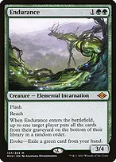Enduranceflash graveyard disruption against a reanimation or graveyard-combo turn. Its effect puts the target player's graveyard on the bottom rather than exiling it; evoke costs another green card and normally sacrifices Endurance. 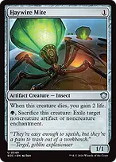Haywire Mitea cheap creature tutor target that exiles a noncreature artifact or enchantment, including indestructible ones. It cannot exile an artifact creature; use another answer for that. 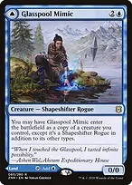Glasspool Mimic // Glasspool Shorecopy a useful nonlegendary creature such as Titan, Ibex or Craterhoof, or play the land face for development. Copying a legend forces a legend-rule choice. A same-named copy can also prevent Guardian Project from drawing. Find the right creature and keep interaction ready →Survival of the Fittest → Radagast of Rhosgobelturn a spare creature into the flash/discount engine when mana is available but your threats are awkward to deploy. →Survival of the Fittest → Endurancehold green mana and a creature to discard when a graveyard player is threatening a decisive turn. Tutoring does not itself cast Endurance. →Survival of the Fittest → Titan of Industryfind a broad stabilizer when removal plus a body, life or protection is more useful than maximum damage. →Chord of Calling → Tishana's Tidebinderfind an instant-speed ability answer while the problematic ability is still on the stack. Creatures can convoke even when summoning sick; the spell is still subject to counterspells. →Green Sun's Zenith → Seedborn Musefind the untap engine once flash permission or other useful mana sinks are established. Zenith only finds green creatures, so it cannot get Venser or Tidebinder. →Eldritch Evolution → Kogla, the Titan Apesacrifice a four-mana creature to find six-mana Kogla for a creature answer. Sacrifice is an additional cost and is lost even if Evolution is countered. 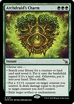Archdruid's Charmcreature selection, a tapped land such as Cradle, a one-sided creature-damage effect, or artifact/enchantment exile. Its triple-green cost rewards careful fetching. A creature found by its first mode goes to hand, not the battlefield. 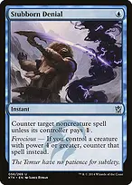+Stubborn Denial + Mana Drainprotect a finish or stop an opposing spell-based win. Denial only hits noncreature spells and is merely a one-mana tax without ferocious. ++Force of Vigor + Beast Within + Pongifyremoval that works without first resolving a large creature. Force's alternative cost is available only when it is not your turn; the creature tokens from the other two spells are usually manageable with this deck's attackers. Blasphemous Actthe emergency reset when creatures have outpaced you. It also kills your mana creatures and most threats unless protected, so use your selective removal first when the race is still favorable. Opening hands and attack sequencing Keep two or three usable lands, early acceleration and a draw engine or meaningful follow-up. A hand of seven-mana threats is not rescued by having the commander available. The list has 35 lands plus two creature/land cards and thirteen early ramp cards; Henge and the discount creatures add later acceleration. Fetch untapped green first for the one-mana creatures, then secure blue and red for Surrak and Ascendancy. Nine fetchlands, six original/shock duals and the multiplayer duals support heavy green costs. Four basics give straightforward targets without overwhelming the colored mana base. Develop ramp into a draw or discount engine before spending the whole turn on a monster. Hold Surrak when flashing it in is better than announcing your combat plan. With Seedborn Muse, keep enough mana and cards to act on the next opponent's turn instead of emptying everything immediately. Before attacking, resolve beginning-of-combat boosts, declare attackers and their triggers, then reassess after blockers. Cast Berserk and double-strike tricks before the first combat damage step. Leave a protection spell available when a single removal spell would undo the entire attack.